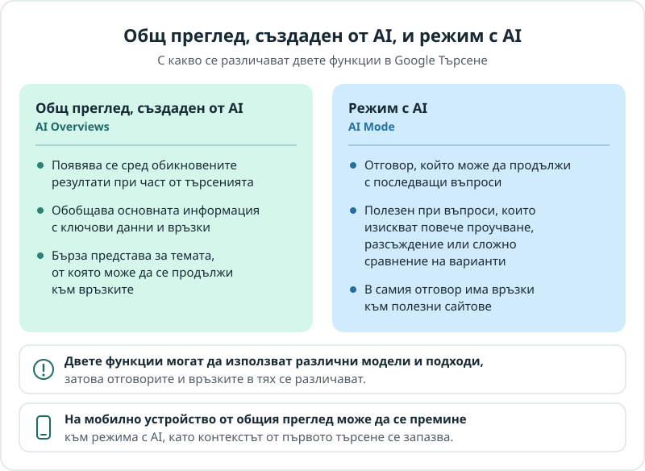
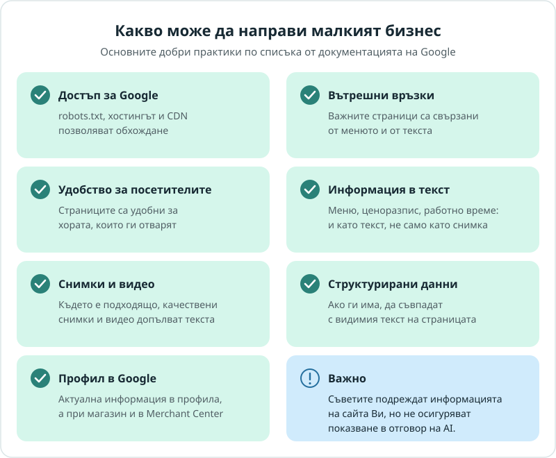

Съвети
Режим с AI в Google: какво е и какво означава за бизнеса Ви
Режим с AI е името, под което функцията Google AI Mode се показва в Google Търсене на български. Тук ще намерите какво прави режимът, с какво се различава от общите прегледи, създадени от AI, и как двете функции показват връзки към сайтове. Последните раздели описват какво може да направи малкият бизнес, за да е информацията за него ясна и вярна, и как да следи посещенията от тези функции.
Автор: Георги ТодоровОбновено
Какво е режим с AI и как работи?
Режимът, който често се нарича и „AI режим“, дава базиран на изкуствен интелект (AI) отговор на въпрос, който сте задали със свои думи. След отговора можете да продължите с допълнителни въпроси, а в самия отговор има връзки към полезни сайтове.
За да подготви отговора, режимът разделя Вашия въпрос на подтеми и търси информация по всяка от тях едновременно. Google нарича този подход разклоняване на заявките (на английски query fan-out) и посочва, че може да се използва и в общите прегледи.
Въпросът може да бъде зададен с текст, с глас, с изображение или с файл, например PDF. Когато системата не е достатъчно уверена в качеството или полезността на отговора, тя може да покаже само набор от връзки към сайтове.
С какво се различава от общите прегледи, създадени от AI?
Общите прегледи, създадени от AI (на английски AI Overviews), дават обобщение на основната информация по темата, с ключови данни и връзки за повече информация. Те се появяват в резултатите, когато системите на Google преценят, че генеративният AI може да е особено полезен, и при много търсения не се показват.

- Общ преглед, създаден от AI. Появява се сред обикновените резултати при част от търсенията и дава бърза представа за темата, от която може да се продължи към връзките.
- Режимът с AI. Дава отговор, който може да продължи с последващи въпроси, и е полезен при въпроси, които изискват повече проучване, разсъждение или сложно сравнение на варианти.
Двете функции могат да използват различни модели и подходи, затова отговорите и връзките в тях се различават. На мобилно устройство от общия преглед може да се премине към разговор в режима с AI, като контекстът от първото търсене се запазва.
Как да отворите AI Mode и наличен ли е на български?
Режимът е наличен в България, а българският е сред поддържаните езици. Google посочва три начина да го отворите.
- Отворете адреса google.com/ai в браузъра.
- Отворете google.com, въведете въпрос в лентата за търсене и докоснете „Режим с AI“.
- В приложението Google докоснете „Режим с AI“ на началния екран.
Ако в профила Ви в Google са включени историята и персонализираните препоръки, можете да продължите предишно търсене оттам, откъдето сте прекъснали.
Откъде идва информацията и как се показват сайтовете?
Според Google режимът разчита на това как Google Търсене разбира информацията в мрежата, а отговорите са подкрепени от уеб съдържание. И в общите прегледи, и в режима с AI се показват връзки към сайтове, в които човек може да прочете повече по темата.
За да бъде показана като такава връзка, страницата трябва да е индексирана, тоест включена в базата на Google, и да може да се показва в Търсене с кратко описание под заглавието. Google посочва, че за двете функции няма допълнителни изисквания и не е нужна специална оптимизация.
Не е нужно да създавате нови машинно четими файлове, текстови файлове за AI или специално маркиране в кода на страниците. Не са нужни и специални структурирани данни по schema.org, тоест описание на съдържанието в кода, предназначено за търсачките. Google уточнява също, че дори страница, която отговаря на всички изисквания, може да не бъде обходена, индексирана или показана.
Може ли AI режимът да греши?
Google посочва, че режимът с AI понякога греши и че в общите прегледи, създадени от AI, също може да има грешки. Системата може да изтълкува неправилно съдържанието на дадена страница или да пропусне контекста.
Google съветва хората да проверяват важната информация на повече от едно място, като отварят връзките към източниците и разглеждат другите резултати. Под всеки отговор в режима има икони с палец нагоре и палец надолу, с които можете да изпратите обратна връзка на Google.
За собственика на бизнес това е практична причина да поддържа на сайта си ясна и актуална информация за работното време, адреса, услугите и условията. Човек, който отвори връзката от отговора, за да провери нещо, трябва да намери там верните данни.
Какво може да направи малкият бизнес, за да е информацията му ясна и вярна?
Google посочва, че за функциите с AI не е нужна специална оптимизация и че основните добри практики за SEO, тоест за подготовката на сайта за търсачките, остават полезни. Съветите по-долу следват списъка от документацията на Google. Те подреждат информацията на сайта Ви, но не осигуряват показване в отговор на AI.

- Достъп за Google. Проверете дали файлът robots.txt (правилата за роботите на търсачките), хостингът и мрежата за доставка на съдържание (CDN), ако ползвате такава, позволяват на Google да обхожда страниците.
- Вътрешни връзки. Свържете важните страници помежду си от менюто и от текста, за да се откриват лесно.
- Удобство за посетителите. Погрижете се страниците да са удобни за хората, които ги отварят и четат.
- Информация в текст. Ако менюто, ценоразписът или работното време са качени само като снимка, добавете ги и като текст на страницата.
- Снимки и видео. Където е подходящо, допълнете текста с качествени снимки и видео.
- Структурирани данни. Ако сайтът използва такива данни, те трябва да съвпадат с видимия текст на страницата.
- Профил в Google и продуктови данни. Поддържайте актуална информацията в профила на бизнеса си в Google, а при онлайн магазин и данните в Google Merchant Center, инструмента на Google за продуктите на магазините.
Подробни съвети за това как да поддържате профила на бизнеса си в Google има в отделна статия. Достъпът за Google, вътрешните връзки и структурираните данни са част от техническата работа по сайта и по отделните му страници.
Как да видите посещенията от AI функциите на Google?
Посещенията от общите прегледи и от режима с AI се отчитат заедно с останалия трафик от Търсене в Google Search Console. Това е инструментът на Google, в който собственикът на сайт вижда как сайтът му се представя в търсенето.
Данните се виждат в отчета за ефективността (Performance) при типа търсене „Уеб“ (Web). Google препоръчва да потвърдите сайта си в Search Console, за да откривате по-бързо възможните технически проблеми.
За действията на посетителите в самия сайт, например изпратени запитвания или времето, прекарано в него, може да се използва и Google Analytics, инструментът на Google за статистика на посещенията.
С какво може да помогне Xtra AI?
Xtra AI работи по SEO на сайтове: техническата част, оптимизацията на отделните страници и връзките. Можем също всеки месец да поддържаме профила на бизнеса Ви в Google актуален, с публикации, снимки и информация.
Работата започва с безплатната диагностика и 30-минутен разговор, в който заедно откриваме къде бизнесът Ви губи време. След разговора получавате оферта с приоритизирани решения и ясна цена за всяко от тях. В нея посочваме и как се плаща всяко решение. Срокът зависи от решението и го посочваме в офертата. Диагностиката не Ви обвързва с нищо и работим без дългосрочни договори.
Източници
Често задавани въпроси
Може ли общият преглед, създаден от AI (AI Overview), да бъде изключен в Google?
Google посочва, че общите прегледи, създадени от AI, са основна функция на Търсене, както панелите на знанието, и не могат да бъдат изключени. След като потърсите нещо, можете да изберете филтъра за мрежата, който показва само текстови връзки към сайтове.
Трябва ли сайтът да има специален файл за AI, например llms.txt, за да се появи в режима с AI?
Според документацията на Google не е нужно да създавате нови машинно четими файлове, текстови файлове за AI или специално маркиране, нито да добавяте специални структурирани данни по schema.org. Важи същото изискване като при обикновеното търсене: страницата трябва да е индексирана и да може да се показва в Google Търсене с кратко описание.
Може ли Xtra AI да осигури показване на бизнеса в отговорите на AI в Google?
Не, защото според Google дори страница, която отговаря на всички изисквания, може да не бъде индексирана или показана. Можем да помогнем за това сайтът и профилът на бизнеса Ви в Google да са подредени и с вярна, актуална информация.
Къде в Search Console се виждат посещенията от режима с AI?
Google посочва, че посещенията от общите прегледи и от режима с AI се включват в общия трафик от Търсене в Search Console. Те се виждат в отчета за ефективността (Performance), при типа търсене „Уеб“ (Web).
Какво да направите, ако отговор на AI в Google съдържа грешна информация за бизнеса Ви?
Под всеки отговор в режима с AI има икони с палец нагоре и палец надолу, с които можете да изпратите обратна връзка на Google, а за общите прегледи Google също приема обратна връзка. Проверете и дали сайтът и профилът на бизнеса Ви в Google съдържат вярното работно време, адрес и услуги, защото Google съветва хората да проверяват важната информация чрез връзките към източниците.
Свързани услуги
- SEO оптимизацияТехническо SEO, on-page оптимизация и работа по връзките, с ясни цени в офертата след безплатната диагностика.Научете повече
- Google бизнес профилКак да създадете, заявите и потвърдите Google бизнес профил и какво да проверявате в него всеки месец, включително отговорите на оценки и коментари.Научете повече
- Безплатна диагностикаОтбележете ситуациите, които познавате от своя бизнес, и вижте ориентировъчно колко часа седмично отнемат.Научете повече
Първата стъпка е безплатна
Диагностиката не Ви обвързва с нищо. Показваме Ви точно какво можем да поправим и колко ще струва.